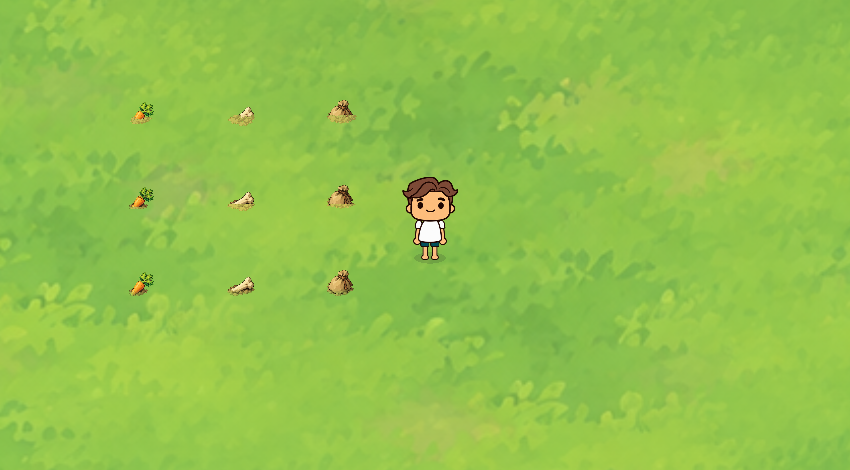

露出部分保持原图清晰、不透明，下部由原画中的真实泥土遮住。挖掘逐步减少泥土遮挡，主体纹理、原点和脚底不切换或移动。底部土边继续适配脚下地表，完整露出后移除前景土层。
下图三列依次为根茎、骨片、补给包；三行依次为初始、挖掘一次、完整露出。真实Godot画面，按实际像素裁取。

完整游戏截图 · 68项专项检查：0失败 · 运行日志
直接渲染抽查869个露出胡萝卜像素，全部不透明，无旧蒙层。未生成或修改PNG，未改变玩法、动作、采集次数、掉落、地图或存档；仅检查本轮视觉及进度依赖。Godot4.7.2 Stable / Compatibility / RTX5060。实际观感待用户复查。